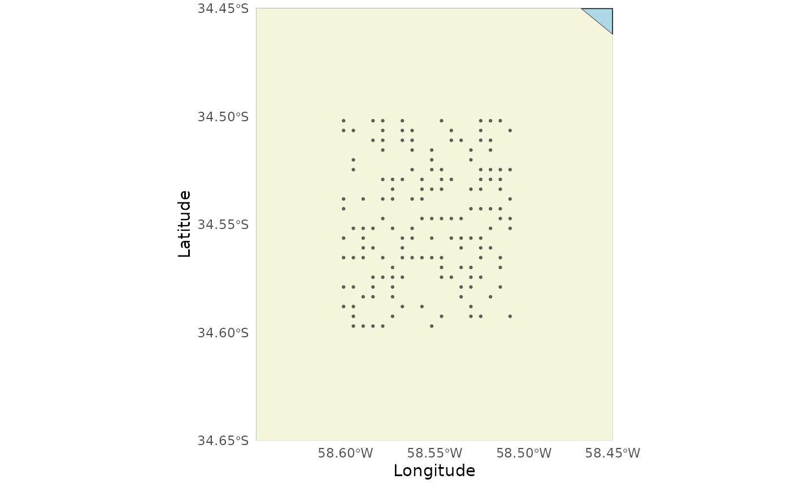
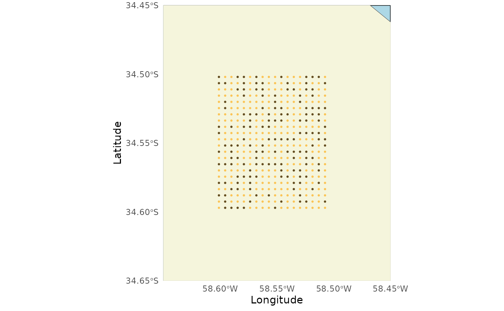
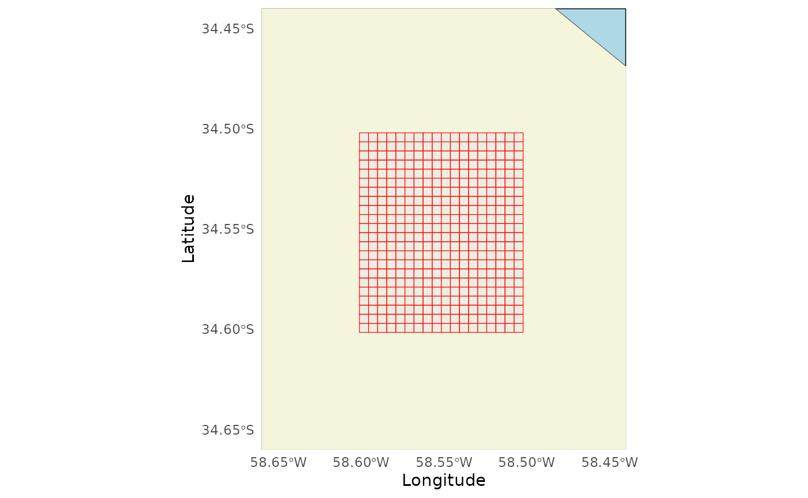
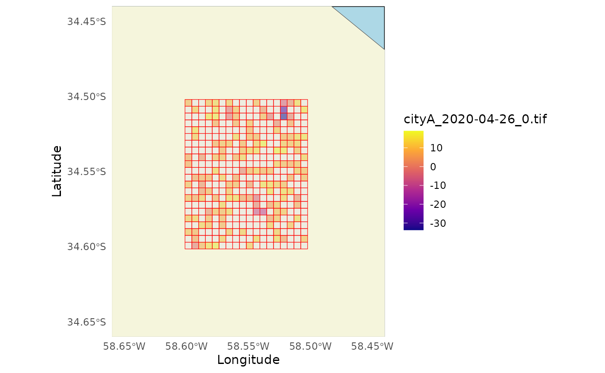

create_rasters_from_grid
Source:vignettes/create_rasters_from_grid.Rmd
create_rasters_from_grid.RmdGenerate rasters from Facebook mobility data
This section focuses on creating a raster from QuadKey data formatted as provided by Facebook Mobility data.
Step 1: read all the csv files from a folder and format
them
All this files are for the same area and level of detail, but dates and times change.
read_all_files produce a warning in case there are days
or times missing.
files <- read_all_files(path_to_csvs = "../geocovid/data/rasters/city/",
colnames = c("lat", "lon",
"quadkey", "date_time",
"n_crisis", "percent_change"),
coltypes = list(
lat = 'd',
lon = 'd',
quadkey = 'i',
date_time = 'T',
n_crisis = 'c',
percent_change = 'c'))
filesStep 2: Convert the Quadkey grid to lat/long coordinates
Even if these files correspond to the same area of analysis, they can vary in the number of QuadKeys that are reported.
That is why we select from all the files all the QuadKeys that have data al least once and convert them to coordinates.
quadkeys <- unique(files$quadkey)
qtll <- quadkey_to_latlong(quadkeys = quadkeys)
qtll
#> Simple feature collection with 150 features and 1 field
#> Geometry type: POINT
#> Dimension: XY
#> Bounding box: xmin: -58.60107 ymin: -34.59704 xmax: -58.50769 ymax: -34.50203
#> Geodetic CRS: WGS 84
#> First 10 features:
#> quadkey geometry
#> 150 2103213001231011 POINT (-58.56262 -34.52466)
#> 149 2103213001213321 POINT (-58.55164 -34.51561)
#> 148 2103213001230331 POINT (-58.58459 -34.55181)
#> 147 2103213001231323 POINT (-58.55164 -34.55634)
#> 146 2103213001322102 POINT (-58.51318 -34.56538)
#> 145 2103213001213313 POINT (-58.54065 -34.51108)
#> 144 2103213001213032 POINT (-58.56812 -34.50203)
#> 143 2103213001302231 POINT (-58.51868 -34.51561)
#> 142 2103213001232323 POINT (-58.59558 -34.59252)
#> 141 2103213001230300 POINT (-58.60107 -34.54276)Let’s plot the grid!

Step 3: Complete the grid
Some of the QuadKeys are missing, we can’t consider this a regular grid.
In order to create the polygons, let’s complete the grid. Pay
attention that the output is a list with 3 elements: data,
num_rows and num_cols.
regular_grid <- regular_qk_grid(qtll)
regular_grid
#> $data
#> Simple feature collection with 396 features and 3 fields
#> Geometry type: POINT
#> Dimension: XY
#> Bounding box: xmin: -58.60107 ymin: -34.59704 xmax: -58.50769 ymax: -34.50203
#> Geodetic CRS: WGS 84
#> First 10 features:
#> quadkey geometry tileX tileY
#> 246 2103213001302123 POINT (-58.50769 -34.50203) 22117 39467
#> 245 2103213001302303 POINT (-58.50769 -34.51108) 22117 39469
#> 244 2103213001302321 POINT (-58.50769 -34.51561) 22117 39470
#> 243 2103213001302323 POINT (-58.50769 -34.52014) 22117 39471
#> 242 2103213001320103 POINT (-58.50769 -34.52919) 22117 39473
#> 241 2103213001320121 POINT (-58.50769 -34.53371) 22117 39474
#> 240 2103213001320301 POINT (-58.50769 -34.54276) 22117 39476
#> 239 2103213001320323 POINT (-58.50769 -34.55634) 22117 39479
#> 238 2103213001322101 POINT (-58.50769 -34.56086) 22117 39480
#> 237 2103213001322103 POINT (-58.50769 -34.56538) 22117 39481
#>
#> $num_rows
#> [1] 21
#>
#> $num_cols
#> [1] 17num_cols and num_rows refer to the number
of columns and rows, we will use this data to create the raster.
Let’s see if completing the grid worked:

Step 4: Create the polygons
# Now we can transform the quadkeys into polygons
polygrid <- grid_to_polygon(regular_grid$data)
polygrid
#> Simple feature collection with 396 features and 1 field
#> Geometry type: POLYGON
#> Dimension: XY
#> Bounding box: xmin: -58.60107 ymin: -34.60156 xmax: -58.5022 ymax: -34.50203
#> Geodetic CRS: WGS 84
#> First 10 features:
#> quadkey geometry
#> 1 2103213001233203 POLYGON ((-58.57361 -34.588...
#> 2 2103213001320201 POLYGON ((-58.52966 -34.547...
#> 3 2103213003010110 POLYGON ((-58.59009 -34.601...
#> 4 2103213001320232 POLYGON ((-58.52417 -34.560...
#> 5 2103213001213323 POLYGON ((-58.55164 -34.524...
#> 6 2103213001230322 POLYGON ((-58.60107 -34.560...
#> 7 2103213001322200 POLYGON ((-58.53516 -34.583...
#> 8 2103213001233103 POLYGON ((-58.55164 -34.569...
#> 9 2103213001302202 POLYGON ((-58.53516 -34.515...
#> 10 2103213001320100 POLYGON ((-58.51318 -34.529...
Once I have the regular grid of quadkeys for the bounding box and level of detail, I combined the information with the data provided. I can select the variables that will be part of the analysis and also create new variables if needed.
polyvar <- files |>
dplyr::inner_join(polygrid, by = 'quadkey' ) |>
apply_weekly_lag()
polyvar7 <- polyvar |>
drop_na(percent_change_7)Step 5: Create the rasters for the variables and data involved.
The rasters are going to be created automatically for each day and
time reported. Each raster will be created as
<filename>_<date>_<time>.tif. The
function polygon_to_raster will work even if there are some
days and times missing.
# variable 1
polygon_to_raster(data = polyvar,
nx = grid$num_cols +1 ,
ny = grid$num_rows +1 ,
template = polyvar,
variable = 'percent_change',
filename = 'cityA',
path = "data/"
)
# variable 2
polygon_to_raster(data = polyvar7,
nx = grid$num_cols +1 ,
ny = grid$num_rows +1 ,
template = polyvar7,
variable = 'percent_change_7',
filename = 'cityA',
path = "data/"
)This is how one of the rasters can look like. As you can see, the overlapping with the polygon grid is perfect:
